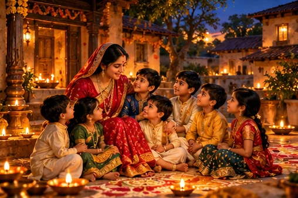
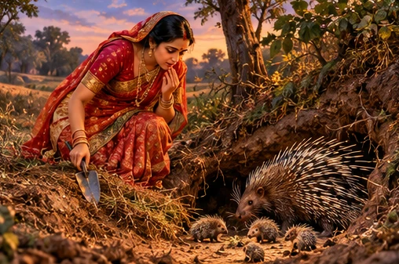
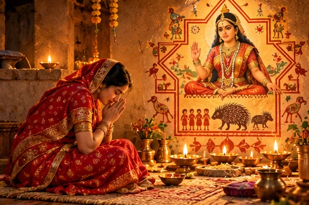
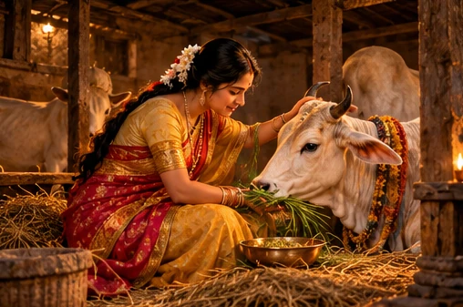
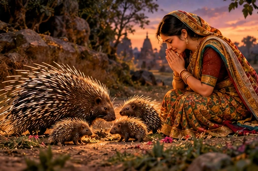
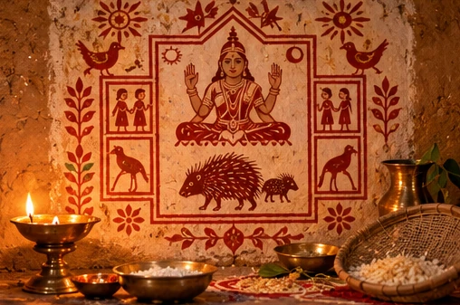
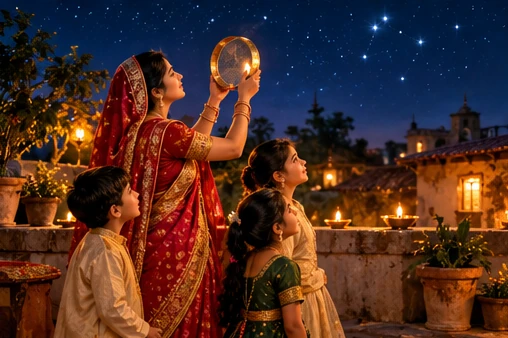
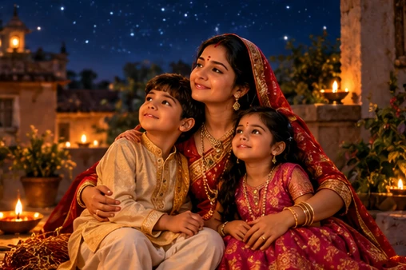

Between the moon and the lamps

The festival arrives in a particularly tender part of the Hindu year. Karwa Chauth has just passed; Diwali's rows of lamps are still to come. Between them, on the eighth lunar day of the dark fortnight, many North Indian homes turn their attention to children. The prayer is simple: may they be safe, healthy and able to flourish.
Ahoi Ashtami is often called Ahoi Aathe. In older customs mothers observed the vrat particularly for sons; many families today include daughters equally. Ahoi Mata is revered as a protective mother, yet the most memorable feature of her festival is a story about another mother—one whose children are not human at all.
The date in 2026 is Sunday, 1 November. The exact puja window, star visibility and moonrise depend on location; the Delhi timings sometimes quoted online should never be copied as Dutch local times.
The burrow beneath the earth

The old household katha begins before Diwali, when a moneylender's wife sets out to dig fresh earth for repairing and plastering her home. She has seven sons, and the household is full of the movement and noise of children. Her spade enters the soil where a syahu—a mother porcupine—has made a burrow.
Without seeing what lies below, the woman strikes a young porcupine. The cub dies. The moment is accidental, but the grief of the mother animal is not. The woman returns home carrying more than earth: she carries the knowledge that her preparation for a happy festival has harmed another family.
The tale is deliberately difficult. It does not present an intentional cruelty or a simple villain. It asks whether the suffering of a small creature matters even when no one meant to cause it.
Seven sons, a silence, and a prayer

As the story is told, sorrow comes to the woman's home: her seven sons die one after another. In her grief she speaks to the older women of the village and tells them about the porcupine cub. They do not tell her to hide the accident. Instead, they advise her to acknowledge the harm, draw Ahoi Mata and the syahu with her young, and pray with humility on Kartik Krishna Ashtami.
She keeps the vrat, listens to the katha and seeks forgiveness. The story ends in grace: in some versions her sons return to life; in others she is blessed with children again. These are different oral retellings, not two historical claims to be harmonised.
Notice the shape of the teaching. Her prayer for her own children becomes inseparable from recognising the love of another mother. The painting on the wall preserves the animal and her young at the very centre of the worship.
The youngest daughter-in-law and Surahi

A second much-loved katha begins with a daughter visiting her parental home before Diwali. She and her seven sisters-in-law go to collect earth. When a porcupine cub is accidentally killed, Syahu declares that the daughter's womb will be bound. The frightened daughter begs the sisters-in-law to take her place. Only the youngest agrees.
Thereafter the youngest daughter-in-law loses her children soon after birth. Her grief is repeated and unbearable. Seeking a path out of sorrow, she is advised to care for Surahi, a cow. Day after day she serves the animal faithfully, without demanding an immediate reward.
Surahi becomes her helper. In the extended versions, the cow leads her on a difficult journey to Syahu Mata, and the young woman receives an opportunity to make peace. This is a household folktale about compassion, service and courage, not a passage that can be confidently attributed to a major Purana.
Meeting Syahu Mata

In the longer telling, the youngest daughter-in-law serves Syahu Mata as patiently as she served Surahi. She does not arrive with a demand; she arrives with a willingness to listen and make amends. Moved by her devotion, Syahu releases the binding and blesses her with a flourishing family.
The two kathas differ in characters and plot, but they share a moral centre. The animal mother is not merely an obstacle in a human story. Her pain must be recognised. Reconciliation becomes possible through patient care rather than anger or bargaining.
Families often tell one version, the other, or both. Where details vary—seven sons restored, seven children born anew, or a blessing on the daughter-in-law—those differences belong to the living oral tradition.
Why Ahoi Mata is drawn on the wall

Traditionally, a picture of Ahoi Mata is drawn with geru (red ochre) on a cleaned wall, sometimes inside an eight-sided or eight-compartment design. The syahu and her young are shown nearby. Some homes use a printed image, a framed picture, or a small silver syahu. The forms vary by family and region.
This is more than decoration. The wall becomes a visual telling of the katha: a protective goddess, a grieving animal mother and the children for whom prayers are offered. The number eight recalls ashtami, the eighth lunar day.
A simple home arrangement may include a lamp, water in a vessel, roli or kumkum, rice, flowers, sweets and a place for the family to sit together. These are common practices, not a compulsory universal checklist.
The evening puja and the first stars

Many households begin the day with a sankalp—a quiet intention for their children's wellbeing. Some mothers keep a strict fast without water; others follow a gentler family custom or do not fast. At dusk the family gathers before Ahoi Mata's picture. The lamp is lit, the story is narrated, and aarti or a simple prayer is offered.
Then comes the most memorable moment: looking for the first visible stars. In many traditions water is offered towards the stars and the fast is concluded. Some households wait for the moon instead. The sky is not a clock with a single universal minute: visibility depends on the weather, horizon, local twilight and the family's custom.
If you live outside India, use local sunset and star visibility rather than an India-based muhurat. A day without food or water can be unsafe for some people, including those who are pregnant, breastfeeding, ill or taking certain medicines. A prayer offered without fasting is still a meaningful way to participate.
Ahoi Ashtami at Radha Kund
Near Govardhan in the Braj region, Radha Kund has its own Ahoi Ashtami observance. Devotees, including couples praying for children, gather for a sacred bath; the custom is especially associated with the night of the festival. It belongs to the devotional geography of Krishna and Radha rather than to the porcupine story itself.
In Braj tradition, the ponds of Radha Kund and Shyam Kund are connected with Krishna's defeat of the bull-demon Arishtasura and the loving play of Radha and Krishna. The Bhagavata Purana tells of Arishtasura, while the detailed origin of the kunds belongs to later Vaishnava devotional tradition. Those layers should not be confused.
A family need not travel to Radha Kund to honour Ahoi Mata. Its place in this guide is to show how a household vow also connects to the wider sacred landscape of India.
What the story asks of us today

When the last lamp is extinguished, the central question of Ahoi Ashtami remains. Can we pray for our own children's safety while remembering the young of other creatures? Can we recognise unintended harm, speak truthfully about it and choose a kinder action next time?
A modern celebration may include sons and daughters, mothers and fathers, grandparents and children. It may involve fasting, or simply listening to the story together, drawing Ahoi Mata, feeding animals responsibly, or offering a prayer beneath the stars.
The festival's deepest image is not the fast alone. It is a mother looking upward at the stars while remembering that every living being belongs to a web of care. May the children of every home grow in health, courage and compassion.
Sources, story types and further reading
The two syahu stories are North Indian household vrat kathas transmitted in multiple versions, not a single securely identified passage from a Purana. The Radha Kund material belongs to the Braj Vaishnava devotional tradition. Images are newly generated interpretive illustrations, not photographs or historical evidence.
- Drik Panchang — Ahoi Ashtami 2026 date and timings (New Delhi)
- Drik Panchang — Ahoi Ashtami vrat katha and regional observances
- Sanatanshala — retellings of the two household kathas
- Prokerala — festival context and tithi
Date and timing conventions vary by location and tradition. This guide does not replace a location-specific panchang.